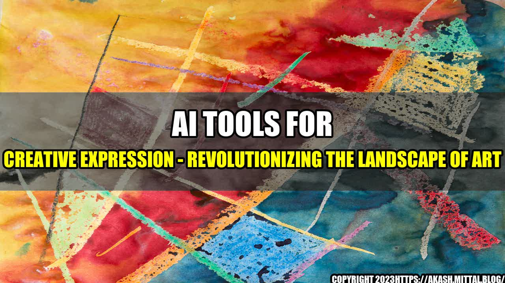

AI Tools for Creative Expression
Artificial Intelligence (AI) has disrupted several industries, and the world of art is no exception. Over the years, AI has made significant contributions to the way we approach art-making and creative expression. From music composition to visual art, AI has revolutionized the landscape of art and opened up new possibilities for creative expression.
An Interesting Story to Begin with
Almost a decade ago, the French artist Fabien Barrau was fascinated by the concept of fractals - a mathematical set that exhibits a repeating pattern. He wanted to incorporate fractals into his artwork and started to experiment with different forms of media and tools to achieve his vision. However, he found it challenging to generate fractals that were both complex and aesthetically pleasing. That is when he stumbled upon a unique tool - an AI-powered algorithm that he could use to generate fractals and patterns automatically.
"With AI, I was able to generate complex fractals and patterns that I wouldn't have been able to create otherwise."
Using this tool, Fabien was able to take his art to a whole new level. AI helped him achieve his creative vision and gave him access to new ideas and possibilities that were previously impossible. He was no longer constrained by traditional artistic tools and the limitations that came with them.
- Musical Composition - AI-powered tools like Amper Music use machine learning to create custom music compositions that are tailored to your specific needs. They analyze your preferences and use algorithms to generate new music compositions that are unique and suited to your style.
- Visual Art - Artbreeder is an AI-powered website that uses GANs (Generative Adversarial Networks) to create new and unique visual art. It allows users to combine different art styles and create mashups that would be impossible to create with traditional tools.
- Poetry - Poet Assistant is an AI-powered tool that helps poets generate new and creative ideas for their writing. It uses machine learning algorithms to analyze existing poetry and generate new lines and stanzas that fit the style and tone of the poet's work.
The Magnetic Title
"Unleashing Hidden Potentials: How AI is Revolutionizing the Landscape of Art"
Conclusion in Three Points
- AI is a powerful tool that has the potential to transform the way we approach art and creative expression. It allows artists to break traditional artistic boundaries and unleash their true creative potential.
- AI provides access to new technologies that were previously impossible to achieve with traditional tools. It provides artists with unique and innovative ways to express themselves and their ideas.
- AI is changing the landscape of art, and the possibilities are endless. It is revolutionizing the art world and providing new opportunities for both artists and art enthusiasts.
Curated by Team Akash.Mittal.Blog
Share on Twitter Share on LinkedIn